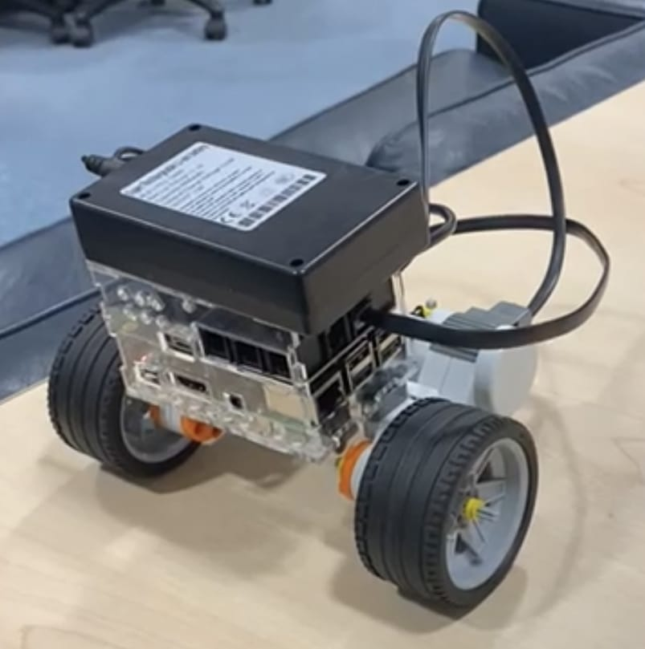
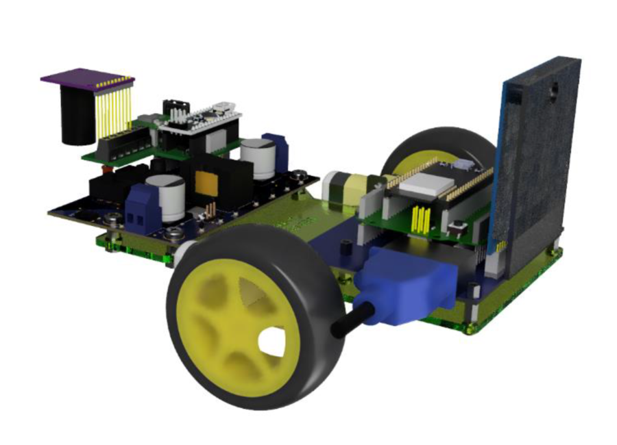
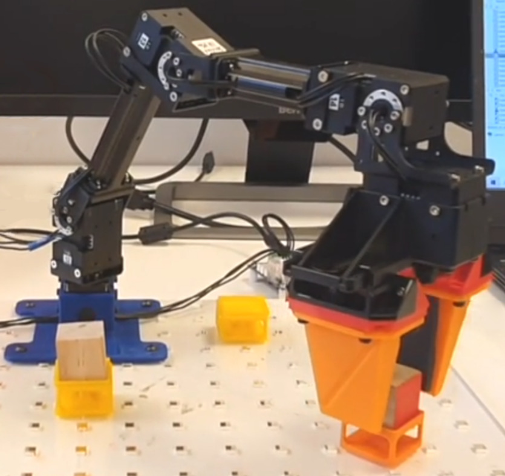
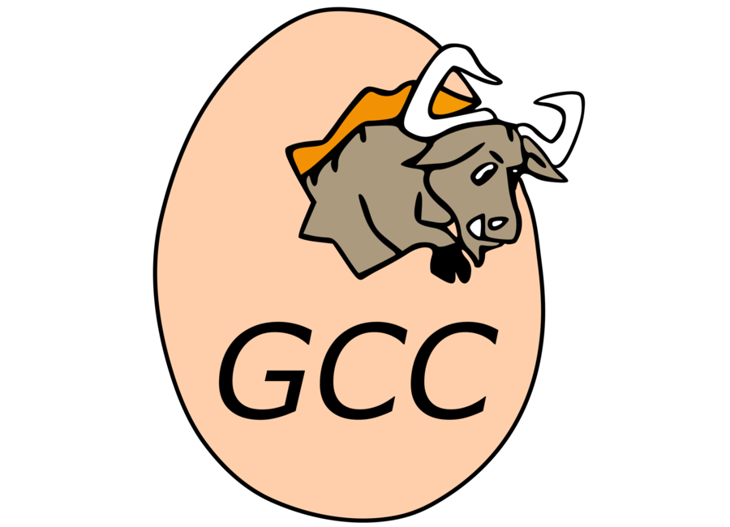
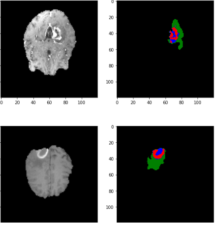
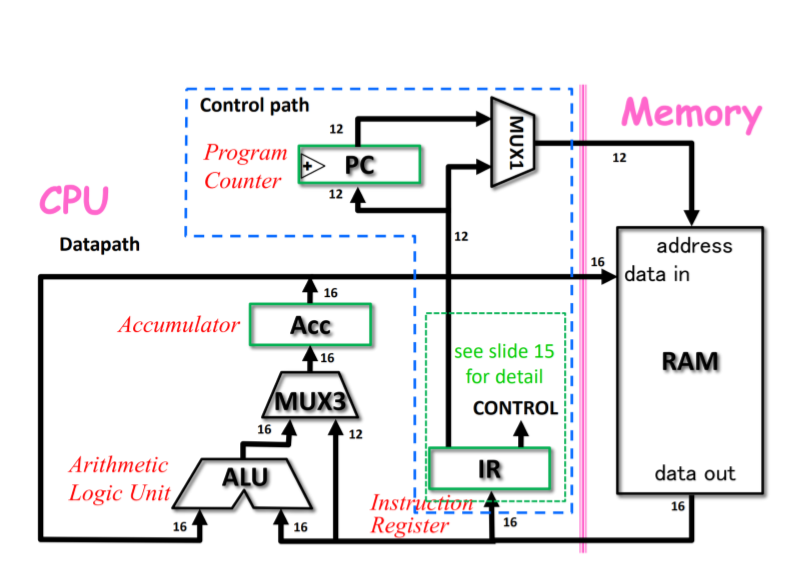
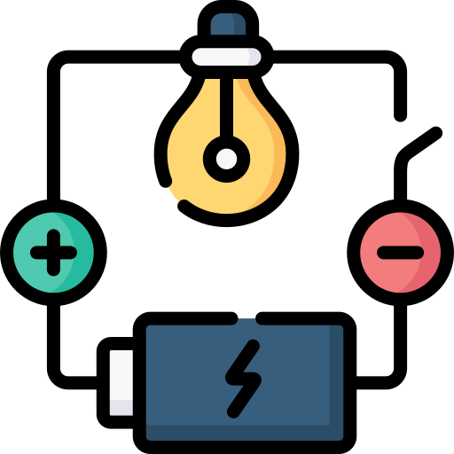

Monte Carlo Localisation
Implemented Monte Carlo localisation on a differential drive robot with a sonar, using Python. Visualised the uncertainty in the robot's position in real time as it moved and took sonar readings.
A list of projects I've been involved in during my time at Imperial College London.

Implemented Monte Carlo localisation on a differential drive robot with a sonar, using Python. Visualised the uncertainty in the robot's position in real time as it moved and took sonar readings.

Implemented the computer vision subsystem which identified several pre-defined obstacles and returned their coordinates in 3D space relative to the rover.

Completed a number of manipulation tasks using the Open Manipulator X including: picking and placing a cube, picking and placing/rotating cubes to form a 3 cube stack and picking up a pen to draw shapes on a whiteboard. We first modelled the robot and solved its inverse kinematics. We used basic MATLAB and the Dynamixel SDK only.

Created a compiler using C++, Lex, and YACC to convert pre-processed C90 code into MIPS assembly code.

Developed and trained a convolutional neural network for brain tumour image segmentation using PyTorch.
Created and implemented a functional MIPS32 processor in SystemVerilog, accompanied by a test-bench for validating the functional accuracy of the CPU design.

Designed and tested a dual-core MU0-Arm CPU with UART input, bitstream output, and floating-point arithmetic capabilities.

Developed a C++ circuit simulator compatible with SPICE, capable of simulating circuits with resistors, capacitors, inductors, voltage sources, current sources, and diodes.